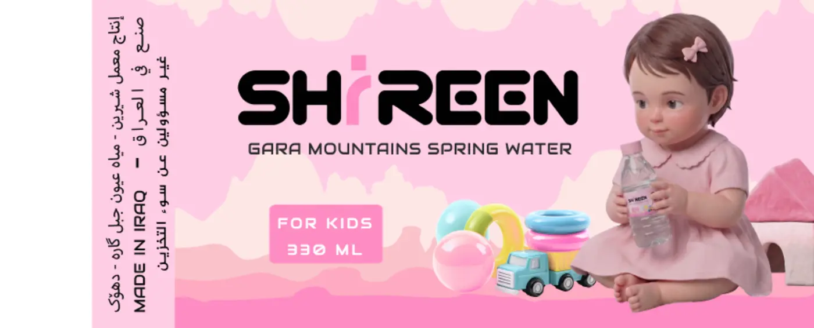
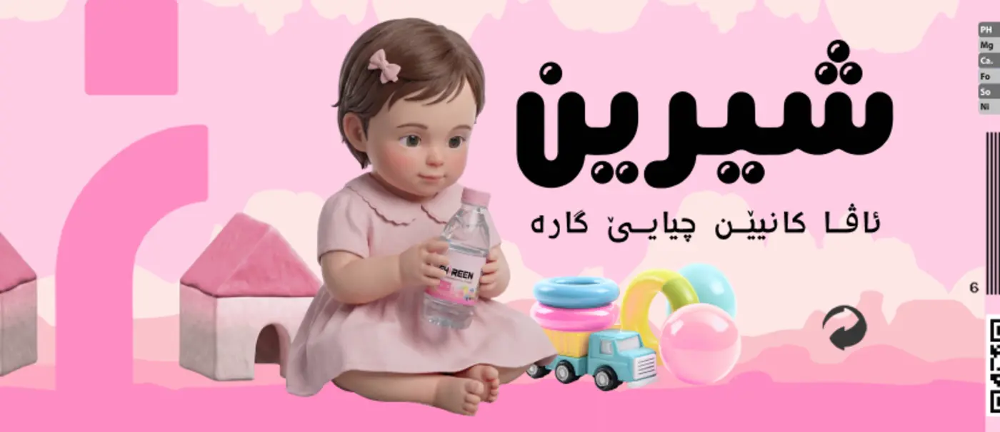
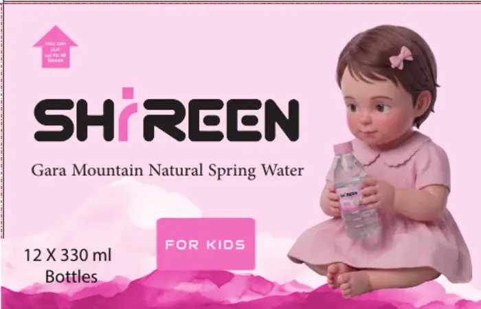
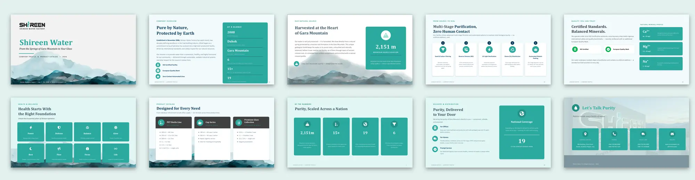
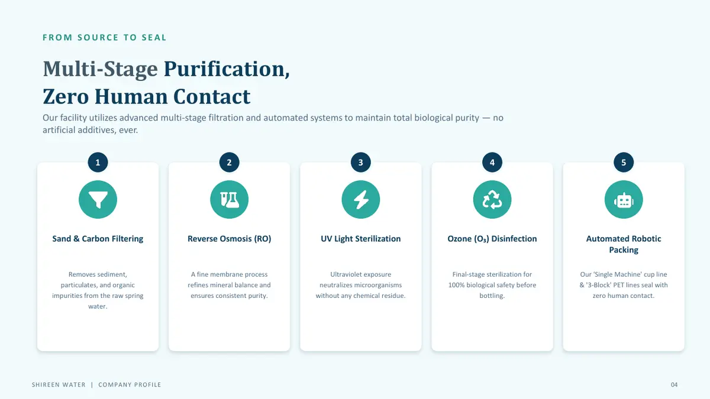
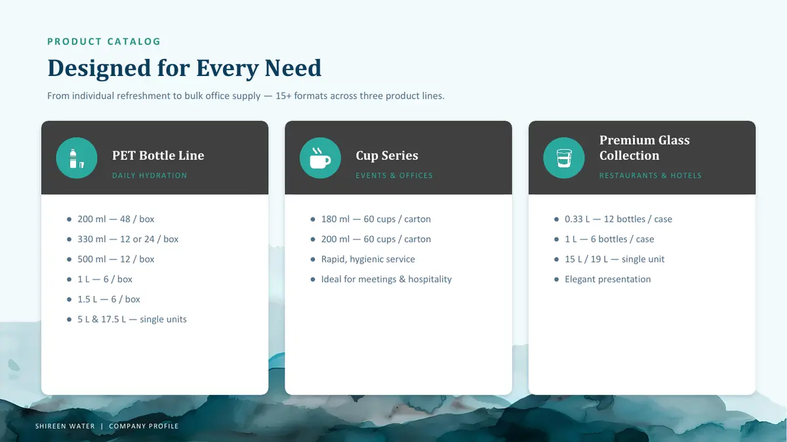
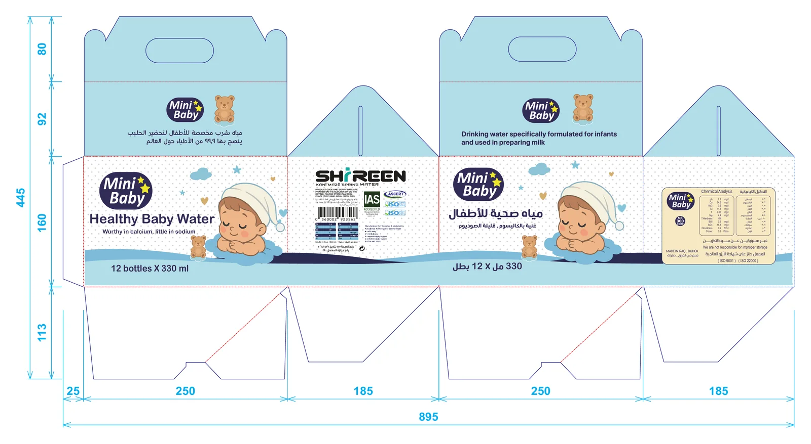

Packaging & presentation / one client, five pieces
Shireen: from bottle to carton to pitch.
Client
Shireen Water Factory — Duhok
Pieces
Label, three cartons, company profile, receipt
Languages
English, Kurdish, Arabic
My role
Full design of all three, including the child images
The kids' line cartons: blue and pink versions.
Context
Shireen is spring water from the Gara Mountain in Duhok. I designed three pieces for the company: the kids' bottle label, the 12-bottle carton in two versions, and a company profile. Later I added two more: a carton for the «Mini Baby» baby-water line and a delivery receipt. Each piece has a different reader — a child and parent at the shelf, a distributor carrying a carton, a business client getting to know the factory — but they all had to look like one family.
The label laid flat. Both faces repeat so the bottle reads from either side.
Pink signals the range: a light pink background with soft clouds, instead of the usual water blue.
A baby girl holding the bottle: an image I created, with toys around her, so parents know who it's for without reading.
Two independent faces: an English «SHIREEN» face and a Kurdish «شيرين» face, each with its own bold wordmark and tagline.
Information on one edge: the mineral table, barcode, QR and ISO marks grouped in a high-contrast panel, away from the image.

The English face.

The Kurdish face.The mandatory information panel.
02 / The carton
One carton, two versions, the same system.
Contents
12 bottles × 330 ml
Flat size
895 × 445 mm
Panels
Two 250 mm faces, two 185 mm sides
Versions
Pink (girl), blue (boy)
The pink version laid flat, with measurements in millimetres.The blue version: same dieline, different colour and image.
A girl and a boy from the same family: two images I created in the same style and pose — sitting and holding the bottle — so the versions read as a pair.
Colour separates the versions; everything else stays put: the logo, text, barcode and table sit in the same places on both. Only the colour and the child change.
An extension of the label: the same English and Kurdish faces at a larger size, so the carton on the shelf looks like the bottle inside it.
Every panel has a job: the wide faces carry the name and image, one side the barcode, the other the mineral table, and the top flaps the factory and contact details.
Built for carrying and storage: a die-cut handle on top, a «this way up» arrow on the face, and recycling and storage icons.
Front face — blue.

Front face — pink.
03 / The company profile
A profile that runs from spring to doorstep.
Type
Company profile & product catalogue
Format
10 presentation slides, 16:9
Language
English
Reader
Clients, distributors, businesses

All ten slides in order.
The story follows the water: the source in the mountain, then purification, standards, products, distribution and contact.
One colour for the brand: water green for cards and icons on light backgrounds, with no extra colours.
The mountain returns: a watercolour mountain along the bottom of the slides ties the profile to the Gara Mountain.
Numbers in cards: each key figure gets its own card and icon, and the five purification stages are numbered in order.
A small label above every title: a section tag such as COMPANY OVERVIEW tells readers where they are.
Editable by the client: built in PowerPoint with system fonts, so the company can update its figures itself.
Cover.

The five purification stages.

Product catalogue.
04 / The Mini Baby carton
The same carton, made softer for babies.

The Mini Baby carton laid flat, with measurements in millimetres.
The same dieline: 895 × 445 mm flat, two 250 mm faces and two 185 mm sides, with a die-cut handle on top — like the kids' carton.
A gentler world: light blue, a dotted background, clouds and stars, a sleeping baby in a nightcap, and a teddy bear.
A badge for the line: «Mini Baby» in white on a navy oval with yellow stars, while the SHIREEN logo stays on a side panel.
Two language faces: an English face, «Healthy Baby Water», and an Arabic face, «مياه صحية للأطفال», each with the 12 × 330 ml count.
Information on the sides: one side carries the logo, barcode and certification marks; the other the chemical analysis table in Arabic and English and the ISO marks.
05 / The delivery receipt
A daily form in the brand's colours.
The delivery receipt.
The brand at the top: the SHIREEN logo on one side and the two phone numbers with teal icons on the other, above a teal rule.
A title on a ribbon: «وصل التسليم» in white on a teal tab hanging from the rule.
Fields that are quick to fill: received from, total amount, the receiver's and the accountant's names with space to sign, and the date — on dashed lines with plenty of room.
The mountain again: the soft watercolour mountain from the company profile runs along the bottom.
Limits
These images are from the design files, not photographs of printed products. The figures and information inside the company profile come from the company itself. The product has an official website: shireenwater.net.
Need packaging from label to carton?
From the label to the carton to the company profile — send the sizes, languages and mandatory information.